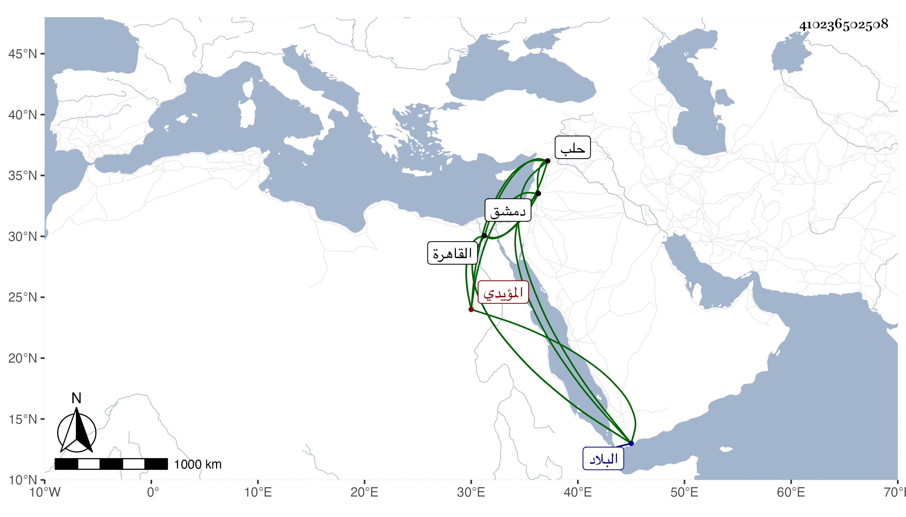

0902Sakhawi.DawLamic.ITO20230111-ara1.EIS1600.410236502508
Biography ID: 410236502508
998
أقباي المؤيدي ولاه أستاذه الدوادارية الكبرى بالقاهرة ثم نيابة السلطان بحلب في سنة ثماني عشرة ثم خرج منها بعد يسير مختفيا على الهجن بحيث وصل القاهرة في اثني عشر يوما لكونه بلغه أنه تكلم في حقه عند السلطان فاكرمه وولاه نيابة دمشق فتوجه إليها في أوائل سنة عشرين ثم لما دخل المؤيد البلاد الشامية اعتقله بقلعتها وقدر أنه هرب فأمسك ثم قتل بالقلعة في أواخرها ، وكان أميرا كبيرا مهيبا جبارا ذا حرمة وله وقف على زاوية جلبان . ذكره ابن خطيب الناصرية ، وقال شيخنا في أنبائه قدمه المؤيد إلى الدوادارية الكبرى ثم نيابة حلب ، وأحال على الحوادث .
